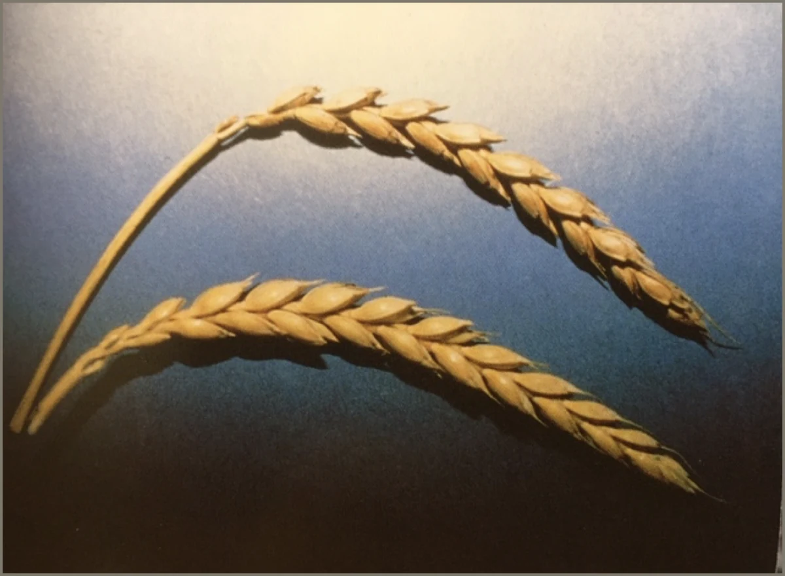
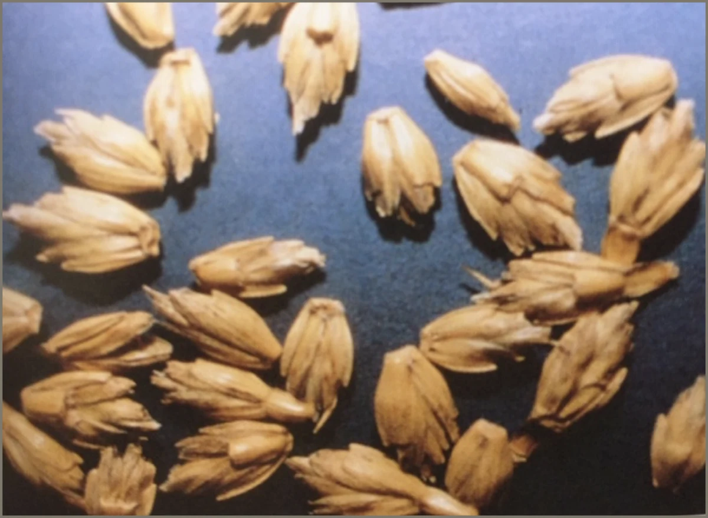

Dinkel-Brot
Dinkel (Triticum spelta L.) gehört zur Gattung der ältesten Weizenarten, wobei über seine Entstehung keine genauen Angaben gemacht werden können. Sein heutiges Erscheinungsbild kann als die Urform angesehen werden. Dinkel gehört zur Gruppe der Spelzweizen, das heißt bei der Reife (Drusch) bleibt das Korn fest von Spelzen umschlossen und muss durch einen weiteren Arbeitsgang (sogenannter Gerbgang) entspelzt werden. Dies hat jedoch gerade in der heutigen Zeit den Vorteil, dass das Korn vor schädigenden äußeren Umwelteinflüssen gut geschützt ist.


Es gibt kein Kopfzerbrechen darüber, was für den Kranken das Beste ist - Dinkel ist das Beste. Ob als Brot, Reis, Kuchen, Waffeln, Keime/Sprossen, Suppe, etc., wie immer gegessen, Spelt ist gut. (Hl. Hildegard von Bingen) Die Erfahrungen an bisher über 10.000 Patienten mit Dinkelkost hat, bis auf wenige Ausnahmen abgesehen, gezeigt, dass reiner Dinkel mit keinem oder nur verschwindend geringem Weizenanteil keine Allergien auslöst, ganz im Gegenteil: Der reine Dinkel ist das erfolgreichste Heilmittel bei Lebensmittelallergie und allergischenErkrankungen; dokumentiert im Hildegard-Zentrum Allensbach/Bodensee (Dr. Strehlow - www.hildegard.de). Voraussetzung ist, dass es sich um reine, unverfälschte Dinkelsorten wie Francken-, Schwabenkorn, Oberkulmer Rotkorn oder Zollernspelz handelt. Fragen Sie bei Ihrem Einkauf nach diesen Sorten. Bei den weitverbreiteten Sorten Rouquin und Hercule handelt es sich um Kreuzungszüchtungen von Weizen und Dinkel, so dass hier der Weizenanteil 50 % beträgt. Das beste Korn, so die Heilige Hildegard von Bingen im 11. Jahrhundert, ist warm, fett, kraftvoll und lieblicher als alle anderen Getreidearten. Es macht seinem Esser rechtes Fleisch und Blut, frohen Sinn und freudig menschliches Denken. Eine Dinkeldiät soll die Grundlage für die Behandlung aller Magen- und Darmerkrankungen, der Nieren sowie aller Stoffwechselleiden sein. Das heißt nun nicht, dass Dinkel all diese Krankheiten heilt, versetzt aber den Körper in die Lage, die geschwächten und gestörten Funktionen wieder zu regenerieren, bzw. sich selbst zu helfen. Der ernährungsphysiologische Wert liegt neben dem hohen Eiweißgehalt in seinem Reichtum an Vitaminen und Mineralien.
WEIZEN
Grundsätzlich gibt es zwei verschiedene Weizenarten: a.) Weichweizen für Brot/Brötchen b.) Hartweizen hat Grannen und wird für Nudeln, Pasta etc. verwendet. Aber der Rohstoff für unsere Nudeln wird aus Kostengründen zum großen Teil aus dem Ausland (Kanada, USA, Russland etc.) bezogen. Hier gelten keine EU-Richtlinien, so dass der Einsatz von Glyphosat besonders der Rohware für Hartweizengrieß - „zur Sicherung der Haltbarkeit der Rohstoffe“ derzeit noch unverzichtbar erscheint. In der EU darf Glyphosat noch bis Ende 2022 verwendet werden, in Deutschland noch bis Ende 2023, aber praktisch nur vor der Aussaat, damit es nicht auf unseren Tellern landet. Ein Antrag auf Wiederzulassung hat die Firma Bayer bereits gestellt. Außerhalb der EU wird Glyphosat noch einmal kurz vor der Ernte gespritzt. Dadurch wird das Getreide schneller reif und andere Pflanzen sterben ab. Genmanipulierter Weizen ist resistent gegen Glyphosat. Um konkurrierendes Unkraut abzutöten, wird er auch noch kurz vor der Ernte mit Glyphosat behandelt. Die Lebensmittelindustrie nutzt Weizenstärke in Zuckerwaren, Milchprodukten, Suppen und Soßen, Nudeln und Fertiggerichten sowie in Fleisch- und Meeresfrüchten. Dies könnte erklären, weshalb immer mehr Menschen Weizen nicht vertragen. Gluten: Macht den Teig elastisch und sorgt dafür, dass er aufgeht.
WEIZENBROT
94 % der Deutschen essen täglich Brot und Brötchen. Das Getreide, das man früher hatte, ist nicht vergleichbar mit dem, was man heute hat. Der hochwachsende Weizen ist inzwischen eine Rarität. Fast überall wächst heute der niedrig gezüchtete Zwergweizen- kniehoch und mit ertragreichen Ähren. Die modernen Getreidehalme mit der Ähre sind so kurz, weil man sie mit verschiedenen Chemikalien - die speziell dafür entwickelt wurden (z.B. Cycocel 720) - behandelt hat, damit sie bei Regen und Sturm nicht umfallen und noch mehr Stickstoffdünger vertragen. Es sind ganz andere Nährstoffe drin mit sehr viel Gliadin und anderen Stoffen, die zum Teil auch zu Allergien und Unverträglichkeiten führen (Wissen aktuell vom 03.12.2020).
Das Geschäft mit dem Brot
Insgesamt sind mehr als 160 Zusatzstoffe - wovon nur ein Teil deklarationspflichtig ist - im Backgewerbe zugelassen. Jeder Deutsche isst pro Jahr durchschnittlich 70 kg Brot. Doch viele Menschen vertragen es offenbar nicht mehr. Sie klagen unter Blähungen, Reizdarm, Allergien etc. Schuld sind sogenannte FODMAP’s (Abkürzung für blähende Nahrungsmittel). Dazu gehören bestimmte Zuckerarten, die von empfindlichen Patienten nur schlecht verdaut werden (siehe. Darm). Viele Fodmaps enthalten Brote, die schnell und ohne lange Gehzeit gebacken werden (Industriebrote). Nach 4-5 Stunden sind die meisten Fodmaps abgebaut, aber wer hat so viel Zeit? Übeltäter sind sogenannte Amylase-Trypsin-Inhibitoren (ATI). Proteine, die in jede glutenhaltige Pflanze, insbesondere Weizen, zur Insektenabwehr hinein gezüchtet wurden (Prof. Schuppan, Uni Mainz). Sie fördern entzündliche Prozesse. Hohe ATI-Gehalte kommen insbesondere bei hohen Stickstoffgaben und Einsatz von Pestiziden vor (Prof. Longin, Agrarbiologe, Uni Hohenheim) Quelle: Marktcheck deckt auf - SWR vom 17.11.2020).